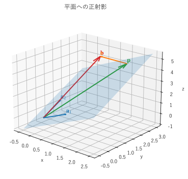
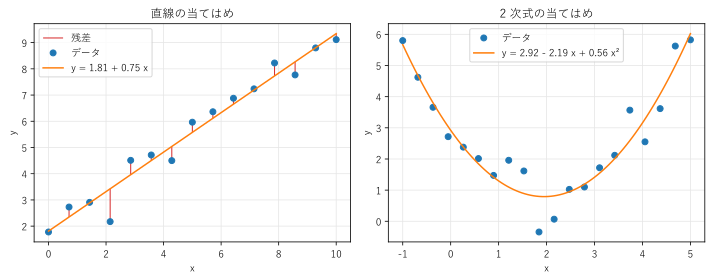

第 9 章 直交性と最小二乗法
互いに直交するベクトルの組は、計算が簡単で、数値的にも安定している。この章では、正規直交基底と直交行列を導入し、部分空間への正射影を一般化する。さらに、正射影を使って、解が存在しない連立一次方程式の「最もよい近似解」を求める最小二乗法を説明する。
正規直交基底
どの 2 つも互いに直交し、それぞれのノルムが 1 であるベクトルの組を、正規直交系という。正規直交系である基底を正規直交基底という。\(\bm{q}_1, \ldots, \bm{q}_n\) が正規直交系であることは、内積で次のように書ける。
標準基底は正規直交基底である。また、標準基底を回転したものも正規直交基底である。
正規直交基底の最大の利点は、座標が内積だけで求められることである。第 7 章では、基底 \(\bm{b}_1, \ldots, \bm{b}_n\) に関する座標を、連立一次方程式を解いて求めた。正規直交基底 \(\bm{q}_1, \ldots, \bm{q}_n\) なら、\(\bm{x} = c_1 \bm{q}_1 + \cdots + c_n \bm{q}_n\) の両辺と \(\bm{q}_i\) の内積を取ると、直交性から \(c_i\) の項だけが残り
となる。これは、第 2 章で述べた「単位ベクトルとの内積は、その方向の成分の大きさ」ということである。フーリエ級数（関数を三角関数の和で表す方法）の係数が積分（関数の内積）で求められるのも、三角関数が直交系をなすからである。
直交行列
正規直交基底を列に並べた正方行列 \(Q = (\bm{q}_1 \ \cdots \ \bm{q}_n)\) を直交行列という。\(Q^\top Q\) の \((i, j)\) 成分は \(\bm{q}_i \cdot \bm{q}_j\) なので、直交行列は
を満たす。逆行列が転置で求められるので、計算が非常に簡単である。
直交行列による変換は、ベクトルの長さと内積（したがって角度）を変えない。
図形の形を変えない変換なので、直交行列は回転か、回転と反射の組み合わせを表す。\(\det Q = 1\) なら回転、\(\det Q = -1\) なら反射を含む。数値計算で直交行列が好まれるのは、長さを変えないので、丸め誤差を拡大しないからである。
部分空間への正射影
第 2 章では、ベクトル \(\bm{b}\) を 1 本のベクトル \(\bm{a}\) の方向に正射影した。これを、\(m \times n\) 行列 \(A\) の列空間（\(\bm{a}_1, \ldots, \bm{a}_n\) が張る部分空間）への正射影に一般化する。
列空間の上の点 \(\bm{p} = A\hat{\bm{x}}\) のうち、\(\bm{b}\) に最も近いものを求めたい。図 13 のように、最も近い点は、誤差 \(\bm{e} = \bm{b} - \bm{p}\) が列空間に垂直になる点である。


図 13 平面への正射影。\(\bm{a}_1 = (1, 0, 1)\)、\(\bm{a}_2 = (0, 1, 1)\)、\(\bm{b} = (1, 2, 5)\)
\(\bm{e}\) が列空間に垂直であることは、\(\bm{e}\) が \(A\) のすべての列ベクトルと直交すること、つまり \(A^\top \bm{e} = \bm{0}\) である（第 8 章の言葉では、\(\bm{e}\) は左零空間にある）。\(\bm{e} = \bm{b} - A\hat{\bm{x}}\) を代入すると、次の式が得られる。
これを正規方程式という。\(A\) の列ベクトルが線形独立なら \(A^\top A\) は正則なので、\(\hat{\bm{x}} = (A^\top A)^{-1} A^\top \bm{b}\) であり、正射影は
である。\(P = A (A^\top A)^{-1} A^\top\) を射影行列という。射影行列には、\(P^2 = P\)（射影したものをもう一度射影しても変わらない）、\(P^\top = P\) という性質がある。\(A\) が 1 列 \(\bm{a}\) だけなら \(A^\top A = \bm{a} \cdot \bm{a}\) は数になり、第 2 章の式 \(\bm{p} = (\bm{a} \cdot \bm{b} / \bm{a} \cdot \bm{a})\,\bm{a}\) に一致する。
12def report() -> None:
13 """射影行列と、b の正射影を表示する."""
14 a = np.array([[1.0, 0.0],
15 [0.0, 1.0],
16 [1.0, 1.0]]) # 列ベクトル a1 = (1, 0, 1)、a2 = (0, 1, 1)
17 b = np.array([1.0, 2.0, 5.0])
18 p_matrix = a @ np.linalg.inv(a.T @ a) @ a.T
19 p = p_matrix @ b
20 e = b - p
21 with np.printoptions(precision=4, suppress=True):
22 print("射影行列 P =")
23 print(p_matrix)
24 print("P @ P == P:", np.allclose(p_matrix @ p_matrix, p_matrix))
25 print("P.T == P:", np.allclose(p_matrix.T, p_matrix))
26 print("正射影 p = P @ b =", p)
27 print("誤差 e = b - p =", e)
28 print("a.T @ e =", a.T @ e) # 各列ベクトルとの内積が 0
射影行列 P =
[[ 0.6667 -0.3333 0.3333]
[-0.3333 0.6667 0.3333]
[ 0.3333 0.3333 0.6667]]
P @ P == P: True
P.T == P: True
正射影 p = P @ b = [1.6667 2.6667 4.3333]
誤差 e = b - p = [-0.6667 -0.6667 0.6667]
a.T @ e = [0. 0.]
誤差 \(\bm{e} = (-2/3, -2/3, 2/3)\) は、\(\bm{a}_1\) とも \(\bm{a}_2\) とも直交している。ここでは射影行列を示すために np.linalg.inv() を使ったが、\(\hat{\bm{x}}\) だけが必要なら、図 13 を描くコードのように、正規方程式を np.linalg.solve() で解けばよい。
最小二乗法
測定データ \((x_1, y_1), \ldots, (x_m, y_m)\) に、直線 \(y = c_0 + c_1 x\) を当てはめたい。すべての点が直線の上にあれば
が成り立つ。しかし、測定には誤差があるので、点の数 \(m\) が 2 より多いと、この方程式には一般に解がない（\(\bm{y}\) が \(A\) の列空間に入らない）。そこで、残差 \(\bm{y} - A\bm{c}\) のノルムの 2 乗、つまり
を最小にする \(\bm{c}\) を求める。これを最小二乗法という。残差のノルムが最小になるのは、\(A\bm{c}\) が \(\bm{y}\) の列空間への正射影になるときなので、\(\bm{c}\) は正規方程式 \(A^\top A \bm{c} = A^\top \bm{y}\) の解である。
直線以外の関数も、係数について線形なら同じ方法で当てはめられる。例えば 2 次式 \(y = c_0 + c_1 x + c_2 x^2\) なら、\(A\) の列を \(1, x_i, x_i^2\) にすればよい。\(x^2\) が入っていても、未知数 \(c_0, c_1, c_2\) については線形だからである。
図 14 は、架空の測定データに直線と 2 次式を当てはめた結果である。左の図の赤い縦線が残差であり、その 2 乗の和が最小になっている。

図 14 最小二乗法による直線（左）と 2 次式（右）の当てはめ
29def fit_polynomial(x: Vector, y: Vector, degree: int) -> Vector:
30 """degree 次の多項式を当てはめ、係数を次数の低い順に返す."""
31 a = np.vander(x, degree + 1, increasing=True) # 列が 1, x, x^2, ... の行列
32 return np.linalg.solve(a.T @ a, a.T @ y) # 正規方程式を解く
np.vander() は、列が \(1, x, x^2, \ldots\) の行列（ヴァンデルモンド行列）を作る関数である。
直線 c0 + c1 x の係数（正規方程式）: [1.8103 0.7533]
直線 c0 + c1 x の係数（lstsq）: [1.8103 0.7533]
2 次式 c0 + c1 x + c2 x^2 の係数: [ 2.9214 -2.1867 0.5614]
データは \(y = 1.5 + 0.8x\) と \(y = 3 - 2x + 0.5x^2\) に誤差を加えて作ったもので、求めた係数はそれに近い値になっている。
サンプルの全体：ch09_least_squares.py
正規方程式は分かりやすいが、\(A^\top A\) を作ると、第 13 章で扱う条件数が 2 乗になり、誤差が大きくなりやすい。実用では、次に述べる QR 分解か、第 12 章の特異値分解を使う np.linalg.lstsq() を使うのがよい。この例では、どちらの方法でも同じ係数が得られている。
グラム・シュミットの直交化と QR 分解
線形独立なベクトルの組から、同じ空間を張る正規直交系を作る方法を、グラム・シュミットの直交化という。手順は次のとおりである。
\(\bm{a}_1\) を正規化して \(\bm{q}_1 = \bm{a}_1 / \|\bm{a}_1\|\) とする。
\(\bm{a}_2\) から \(\bm{q}_1\) 方向の成分（正射影）を引いて \(\bm{v}_2 = \bm{a}_2 - (\bm{q}_1 \cdot \bm{a}_2)\,\bm{q}_1\) とし、正規化して \(\bm{q}_2\) とする。
\(\bm{a}_3\) から \(\bm{q}_1\) 方向と \(\bm{q}_2\) 方向の成分を引いて正規化し、\(\bm{q}_3\) とする。
以下同様に、それまでに作った \(\bm{q}\) の方向の成分を引いて正規化する。
15def gram_schmidt(a: Matrix) -> Matrix:
16 """a の列ベクトルを直交化し、正規直交基底を列に並べた行列を返す."""
17 q = np.zeros_like(a, dtype=float)
18 for j in range(a.shape[1]):
19 v = a[:, j].astype(float)
20 for i in range(j):
21 v -= (q[:, i] @ a[:, j]) * q[:, i] # 求めた基底の方向の成分を除く
22 q[:, j] = v / np.linalg.norm(v) # 長さを 1 にする
23 return q
この手順を行列で表すと、\(\bm{a}_j\) は \(\bm{q}_1, \ldots, \bm{q}_j\) の線形結合で書けるので
となる。\(Q\) は \(\bm{q}\) を列に並べた行列（列が正規直交）、\(R = Q^\top A\) は上三角行列である。これをQR 分解という。
Q =
[[ 0.7071 0.4082 -0.5774]
[ 0.7071 -0.4082 0.5774]
[ 0. 0.8165 0.5774]]
Q.T @ Q =
[[ 1. 0. 0.]
[ 0. 1. -0.]
[ 0. -0. 1.]]
R = Q.T @ a =
[[ 1.4142 0.7071 0.7071]
[ 0. 1.2247 0.4082]
[ 0. -0. 1.1547]]
Q @ R == a: True
np.linalg.qr の R =
[[-1.4142 -0.7071 -0.7071]
[ 0. 1.2247 0.4082]
[ 0. 0. 1.1547]]
\(Q^\top Q\) が単位行列になり、\(R\) が上三角行列になっている。NumPy の np.linalg.qr() は、グラム・シュミットの直交化ではなく、より数値的に安定なハウスホルダー変換という方法で QR 分解を行う。\(Q\) の列と \(R\) の行の符号が反対になることがあるが（この例では 1 行目）、\(QR\) は同じである。
サンプルの全体：ch09_gram_schmidt.py
QR 分解を使うと、最小二乗法の正規方程式 \(A^\top A \bm{c} = A^\top \bm{y}\) は、\(A = QR\) を代入して \(R^\top Q^\top Q R \bm{c} = R^\top Q^\top \bm{y}\)、つまり \(R\bm{c} = Q^\top \bm{y}\) になる。\(R\) は上三角行列なので、後退代入で解ける。\(A^\top A\) を作らないので、誤差が大きくなりにくい。
この章のまとめ
正規直交基底では、座標が内積 \(c_i = \bm{q}_i \cdot \bm{x}\) で求められる。
直交行列は \(Q^{-1} = Q^\top\) を満たし、長さと角度を変えない（回転と反射）。
列空間への正射影 \(\bm{p} = A\hat{\bm{x}}\) は、正規方程式 \(A^\top A \hat{\bm{x}} = A^\top \bm{b}\) で求められる。
最小二乗法は、残差の 2 乗の和を最小にする方法であり、データを列空間に正射影することにあたる。
グラム・シュミットの直交化で、行列を \(A = QR\) と分解できる。実用では
np.linalg.lstsq()や QR 分解を使う。